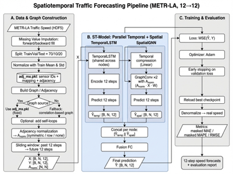
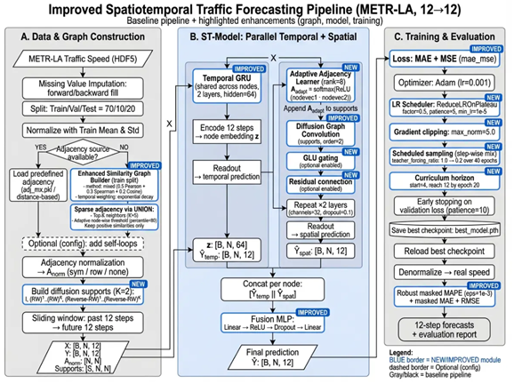

Traffic Forecasting on METR-LA
- Built an end-to-end spatiotemporal forecasting pipeline (data cleaning → sliding-window supervision → training/inference) and evaluated multi-step horizons with masked MAE/RMSE/MAPE.
- Implemented a dual-branch architecture (temporal GRU modeling per-sensor dynamics + spatial diffusion convolution for graph propagation) and fused branch predictions with an MLP head to stabilize time–space coupling.
- Constructed multiple graph priors: (i) physical road topology and (ii) a sparsified similarity graph (Pearson/Spearman/Cosine with time-decay; top-k positive neighbors) to capture non-local dependencies beyond adjacency.
- Improved robustness under distribution shift via Time-of-Day/Day-of-Week periodic conditioning, scheduled sampling + curriculum horizon for multi-step prediction, and training controls (ReduceLROnPlateau, gradient clipping, early stopping).
- Modeled regional heterogeneity with multi-graph supports (within-region topology, within-region correlation, sparse cross-region bridge graph), node-adaptive support weighting, and cross-region attention to mitigate negative transfer.
- Reduced test error from MAE/RMSE/MAPE 6.15/11.98/12.95% (baseline) to 3.71/7.42/10.32% (improved) and 3.57/7.37/10.17% (heterogeneity-aware).

